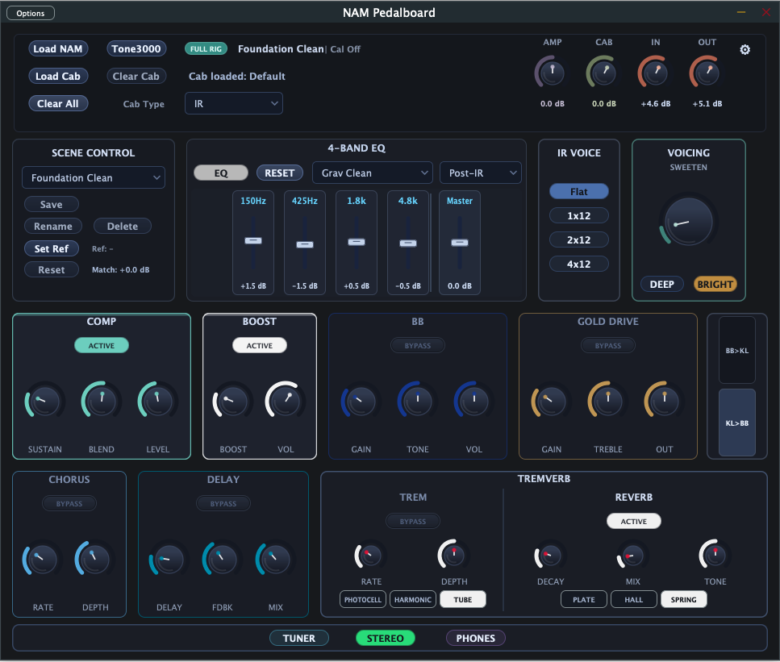
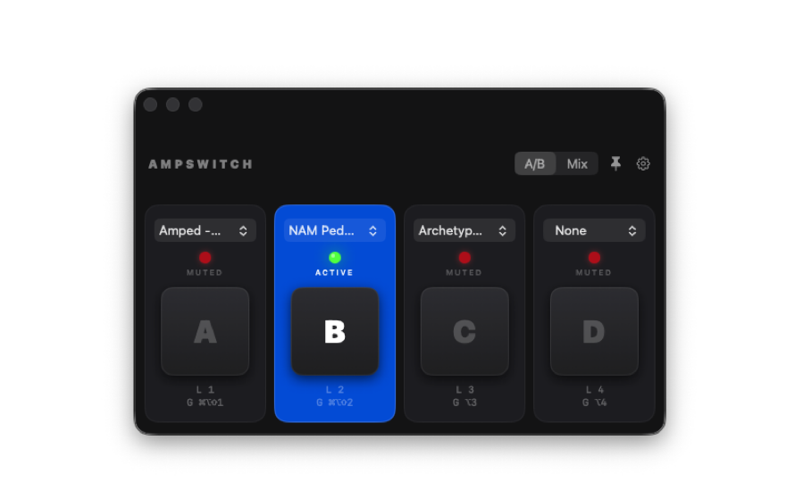

Built for Players
Loads ready to play on first launch. Full state auto-save. Brick-wall output limiter. Input level indicator. PHONES mode for headphone listening. Everything persists between sessions.
NAM Pedalboard runs your guitar through a full chain of studio-quality effects — compressor, drive pedals, four-band EQ, chorus, delay, tremolo, and reverb — all built around Neural Amp Modeler. Six factory sounds. Eight of your own.
Requires macOS 13 or later.

A complete signal chain from guitar in to audio out — no plugins, no DAW required.
Loads ready to play on first launch. Full state auto-save. Brick-wall output limiter. Input level indicator. PHONES mode for headphone listening. Everything persists between sessions.
Load any .nam model to get the authentic character of real amplifiers and gear. Per-model auto-level helps keep switching sounds under control, and the manual AMP trim knob gives you the last word when you want to fine-tune the level yourself.
Katana Boost, BB, and Gold Drive — stack up to three overdrive circuits before your amp model. Switch the chain order with the Drive Order control for two classic stacking flavours.
Four bands tuned for guitar: 150 Hz, 425 Hz, 1.8 kHz and 4.8 kHz — plus a master level and six named presets. Position the EQ before the NAM as a tonestack or after the IR as a final polish.
Load your own cabinet IRs, switch to the built-in NAM Cab voicings, and fine-tune the result with a dedicated cab trim control. It is a quick way to balance level while shaping weight, air, and speaker feel.
Warm stereo Chorus. Analogue-voiced Delay. Tremolo with Tube, Photocell and Harmonic modes. We've given the Reverb extra love, voicing for a bigger, lusher feel. Spring, Plate and Hall options.
Six factory scenes — Foundation Clean, Secret Slap Clean, BB Edge Rhythm, Funk Swirl, Continuum, Lead Push. Save up to eight of your own named scenes. A loudness-matching tool keeps scene levels consistent as you switch.
Browse and download NAM amp models from Tone3000 without leaving the app. Search by amp type, browse featured tones, and load directly into the signal chain.
High-precision pitch detection with cents deviation display and confidence metering. Mutes the signal while active so you can tune silently mid-set.
AmpSwitch mutes and unmutes any audio app on your Mac — stomp-style. Compare two rigs live, switch between channels with a keystroke, no menu diving while you play.
Requires macOS 14 Sonoma or later.

Assign up to four running audio apps to channels A–D and switch between them at the system audio level.
Solo-compare tones instantly using stomp buttons or hotkeys while you play.
Toggle channels independently to hear multiple apps at once.
Local hotkeys switch channels while AmpSwitch is focused — no mouse required.
Keep AmpSwitch visible while using other audio apps and plugin standalones.